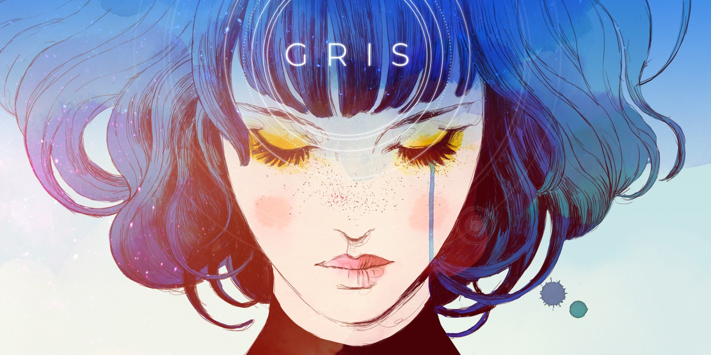

JUEGOS
LISTA DE JUEGOS EN STREAM
GENSHIN IMPACT
La historia se centra en el viajero, un aventurero que despierta 500 años después de estar separado de su alma gemela.Con la ayuda de Paimon(tambien conocida como comida de emergencia) deberá recorrer las 7 naciones con el fin de desentrañar los misterios del mundo y encontrar a su hermana.

MINECRAFT
Está enfocado en permitirle al jugador explorar y modificar un mundo generado dinámicamente hecho de bloques de metro cúbico

ZENLESS ZONE ZERO
La historia se desarrolla en un mundo donde han aparecido unas anomalías llamadas Hollows, que son como dimensiones peligrosas. La mayoría del mundo ha sido destruido, y solo queda una gran ciudad que sobreviven gracias a la tecnología y a personas que se dedican a explorar esas zonas. Tu juegas como un Proxy, alguien que no pelea directamente, pero que guía a equipos de combatientes dentro de los Hollows usando tecnología especial. Tu misión es descubrir que está pasando realmente con esas anomalías.

ARKNIGHTS:ENDFIELD
La historia se desarrolla en el planeta Talos-II, un mundo hostil que está siendo colonizado por la humanidad. Tú juegas como el Endministrador, un alto cargo de Endfield Industries, una empresa encargada de explorar, industrializar y mantener el asentamiento en ese planeta. Al comienzo despiertas sin recordar bien tu pasado, pero pronto descubres que tu papel es clave para la supervivencia de la colonia.

HOGWARTS LEGACY
La historia se sitúa a finales del siglo XIX, mucho antes de los libros de Harry Potter. Tu eres un estudiante que comienza en quinto curso en Hogwarts, algo poco común. Desde el principio se descubre que tienes una conexión especial con una forma de magia antigua y poderosa que casi nadie más puede ver o controlar. Esa habilidad te lleva a investigar un misterio relacionado con esa energía mientras asistes a clases, aprendes hechizos, exploras el castillo y sus alrededores. Al mismo tiempo, hay una amenazada creciente en el mundo mágico que podría alterar el equilibrio entre magos y otras criaturas. Tu papel será entender qué está ocurriendo y decidir cómo actuar frente a ese poder.

LIES OF P
La historia se desarrolla en la ciudad ficticia de Krat, una urbe oscura y decadente. Esta ciudad prosperó gracias a la producción de puppets, autómatas creados para servir a los humanos, hasta que una misteriosa calamidad llamada "El Frenesí de los Puppets" provoca que estas máquinas comiencen a atacar sin razón aparente y la ciudad cae en el caos. Tu controlas a P, un puppet creado por Geppetto, que despierta sin recuerdos claros y se ve envuelto en la misión de explorar Krat, enfrentarse a enemigos peligrosos y descubrir qué está pasando realmente. A medida que avanzas, te encontrarás con personajes complejos, facciones enfrentadas y situaciones que pondrán a prueba tus elecciones.

LISTA DE JUEGOS PENDIENTES
- 60 SECONDS
- MOONLIGHTER
- ALICE MADNESS RETURNS
- GETTING OVER IT
- ISLANDS OF INSIGHT
- JIVANA
- SLIME RANCHER
- SKYRIM V
- CONSTANCE
- ELDEN RING
- THE WITCHER
- THE MORTUARY ASSISTANT
LISTA DE JUEGOS YA JUGADOS
PORTAL
Una joven llamada es secuestrada por una mujer robot conocida como GLaDOS,debe escapar de las cámaras de pruebas que le instaló usando una pistola que crea portales.

PORTAL 2
Muchos años después de "Portal" Chell despierta en Aperture Science e intentar detener a GlaDOS una vez más con ayuda de Wheatley, quien tienes sus propios planes para a histórica instalación.

GRIS
Es una joven perdida en su propio mundo después de haberse enfrentado a una experiencia dolorosa.Nosotros seremos los encargados de acompañarla en su viaje a través del dolor, manifestando por su vestido, dentro de este mundo donde la realidad se desvanece.

IT TAKES TWO
Cody y May es un matrimonio que anhela el divorcio.Sin embargo, tras darle la noticia a su hija se tranforman mágicamente en dos muñecos donde tendrán aprender a colaborar juntos para arreglar su relación.

VIEWFINDER
Es un juego de puzzles en primera persona en el que usando dibujos o fotografías tenemos tenemos que encontrar el camino, muchos de ellos se encuentran por los escenarios, mientras que otros son nuestras creaciones.

PACIFY
Supuestamente hay un mal dentro de esa casa. Algo acerca de una antigua funeraria que ofrece una última oportunidad de hablar con tus seres queridos muertos. Algo más sobre luces,risas,una niña, personas desaparecidas, etc. Sabes lo mismo que todos. Coge un equipo y revisa el lugar.

HOLLOW KNIGHT
Cuenta la historia del Caballero, en su búsqueda para descubrir los secretos del largamente abandonado reino de Hallownest, cuyas profundidades atraen a los aventureros y valientes con la promesa de tesoros o la respuesta a misterios antiguos.

UNDERTALE
Se desarrolla en el Subsuelo, un reino subterráneo donde los monstruos fueron desterrados tras una guerra con los humanos. El juego sigue la aventura de un niño que cae al Subsuelo a través del Monte Ebott y debe encontrar la manera de regresar a la superficie, interactuando con los monstruos y descubriendo los secretos de su mundo. El juego ofrece tres rutas principales: la neutral, la pacifista y la genocida, cada una con diferentes finales.

HOLLOW KNIGHT:SILKSONG
En esta secuela de Hollow knight, juegas como Hornet, una princesa guerrera experta en combate con aguja e hilo. Tras ser capturada, despierta en un reino desconocido, un lugar vertical y misterioso donde todo parece girar en torno a un antiguo poder. Tu objetivo principal es abrirte paso hasta la cima del reino, atravesando diferentes regiones llenas de criaturas peligrosas, culturas propias y secretos enterrados.

SPLIT FICTION
Es una historia sobre dos personas diferentes que deben trabajar juntas a pesar de sus diferencias, enfrentandose a sus propias historias, para poder regresar al mundo real. La narrativa mezcla humor, amistad y aventura mientras exploráis escenarios alocados e imaginativos.

QUARANTINE ZONE:THE LAST CHECK
Se sitúa en un mundo post-apocalíptico tras un brote de virus que convierte a la gente en zombies.La civilización ha colapsado y lo que queda de la sociedad intenta sobrevivir en pequeños asentamientos protegidos. Tú asumes el papel de comandante de un puesto de control crucial encargado de evaluar a los supervivientes que llegan buscando seguridad. Tu misión es decidir quién puede entrar a la zona segura, quién debe permanecer en cuarentena, y quién es tan peligroso que no puede ser permitido.

JUEGOS FAVORITOS
La verdad cuesta decidir cuales son mis juegos favoritos pero podría decir los tres que tengo bastante claro. Hay alguno que no juegue aún pero jugaré en un futuro. Están ordenados por orden de preferencia:
- Hollow knight
- hollow Knight Silksong
- Genshin impact